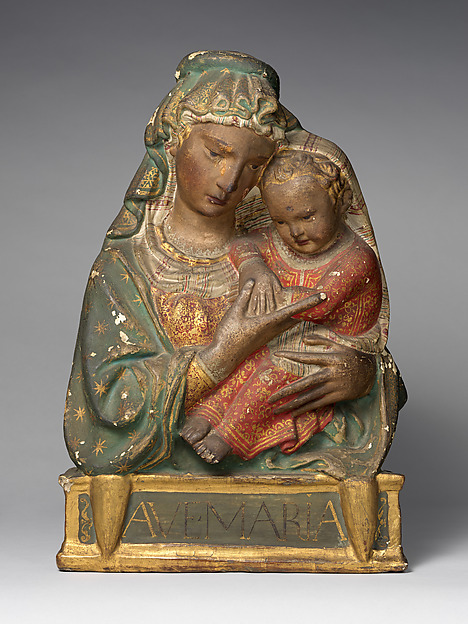
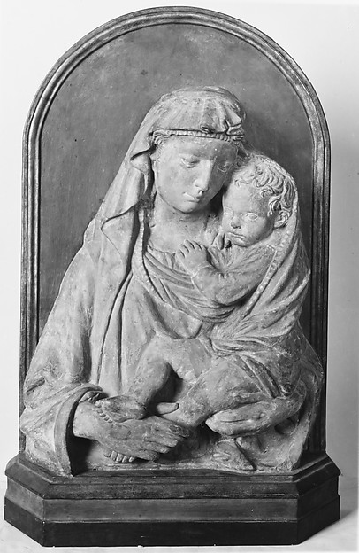

Study 02b · three related recordsImage family / not a mold map
The word
after
The Met links three Madonna and Child reliefs through a note about a composition made for reproduction. Each record places the attribution a little differently.
Probably after18.70.19 ↗

After a composition08.22.3 ↗

After a composition07.120.3 ↗

The records point toward a designed composition and its variants. The surfaces change; the photographs do too. I cannot tell from these views whether any two came from the same mold.